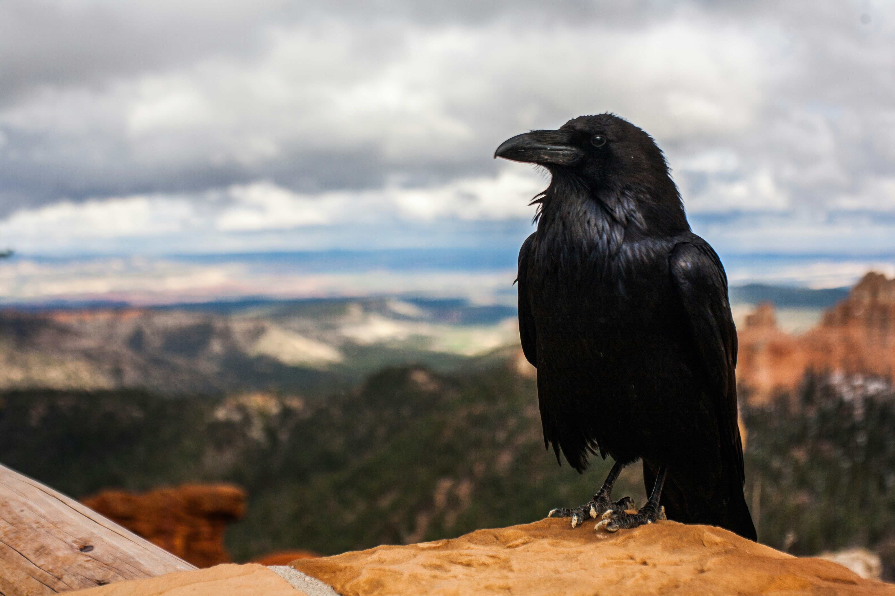
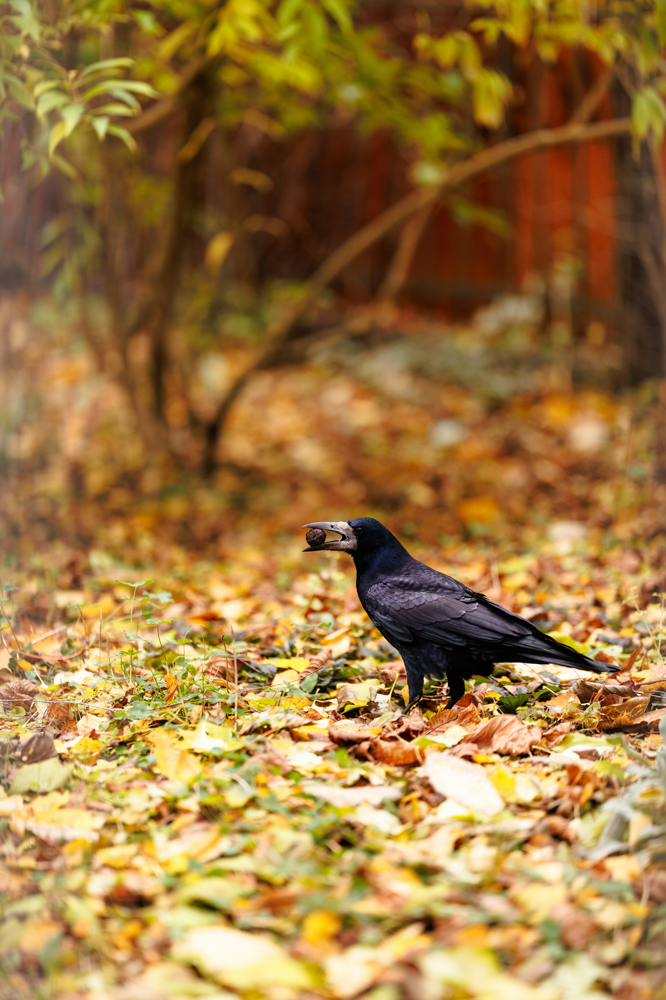
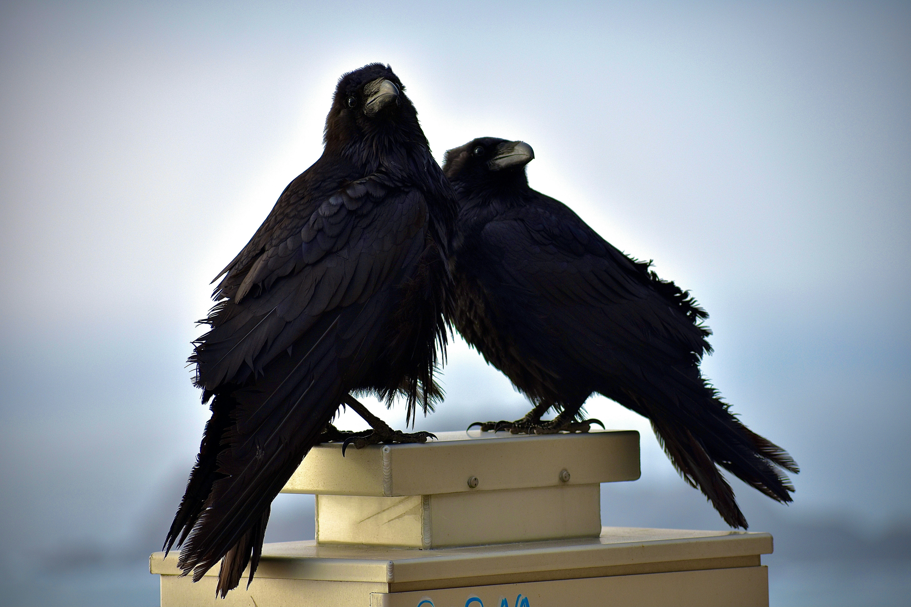
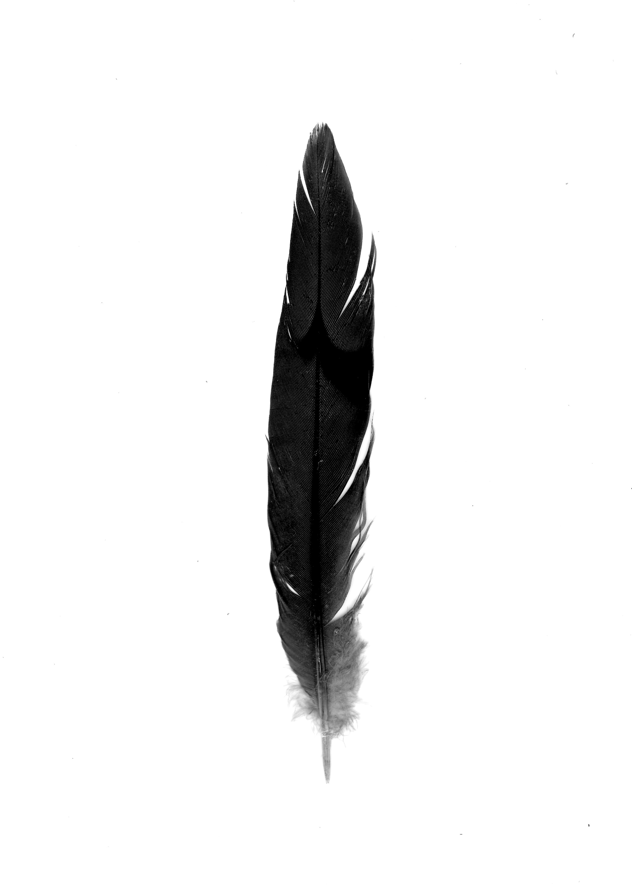

Hábitat y distribución
El cuervo es capaz de prosperar en numerosos climas. Su área de distribución se extiende por toda la zona Holoártica, desde el Ártico y hábitats moderados de Norteamérica y de Europa hasta los desiertos del África Septentrional y las islas del Pacífico. En el Tíbet se ha observado en altitudes de 5.000 m y hasta los 6.350 m en el Everest. Ocupa una gran variedad de hábitats pero requiere áreas de campeo grandes y abiertas, especialmente llanos y dehesas con ganado. También ocupa montes y laderas de matorral con arbolado, bosques abiertos y vegas fluviales.

Hábitos alimenticios
El cuervo común es un ave omnívora y oportunista, lo que le permite adaptarse a una gran variedad de ecosistemas. Su dieta incluye tanto alimentos de origen animal como vegetal. En España, su alimentación se compone de mamíferos, aves (incluyendo huevos y polluelos), reptiles e invertebrados, destacando especialmente los insectos. En cuanto a los vegetales, consume hojas, yemas, frutos y semillas. Además, el cuervo desempeña un papel ecológico clave al consumir carroña y restos de animales atropellados, contribuyendo a la limpieza del ecosistema.

Reproducción
El celo comienza aún en invierno y se caracteriza por una serie de vuelos acrobáticos. Principalmente suele nidificar en árboles y cortados rocosos. El nido se compone de pequeños palos y la puesta suele constar de 4 a 7 huevos con un tono verdoso con manchas ocráceas. Los pollos permanecerán en el nido alrededor de 40 días. La puesta se hace a mediados de febrero y dura tres semanas. Solo incuba la hembra, la cual es alimentada en el nido por el macho hasta unas semanas después de que los huevos hayan eclosionado. Son monógamos y se emparejan de por vida.

Estado de conservación
La superficie de distribución del cuervo grande es amplia y la especie no está en peligro de extinción. En algunas regiones hay decadencias localizadas, causadas por la pérdida de hábitat y la persecución. En otros lugares, las poblaciones aumentaron y pasaron a ser plaga para la agricultura. En Canarias, la subespecie Corvus corax canariensis está clasificada como En Peligro (EN), con un drástico declive en islas como Gran Canaria, Tenerife y La Palma. Las causas incluyen el uso de veneno y cebos envenenados, la caza ilegal, la reducción de la ganadería extensiva y el cierre de basureros.

¿Sabias esto sobre los cuervos?
| Característica | Dato |
| Longitud | 52 – 69 cm |
| Peso | 690 g – 1,7 kg |
| Envergadura | 1,2 – 1,5 m |
| Longevidad media | 10 – 15 años |
| Tamaño de puesta | 4 – 7 huevos |
| Incubación | ~3 semanas |
| Permanencia en nido | ~40 días |
| Estado UICN global | LC (Preocupación menor) |